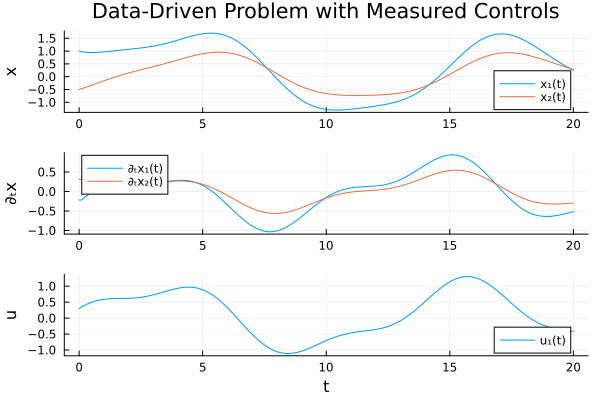
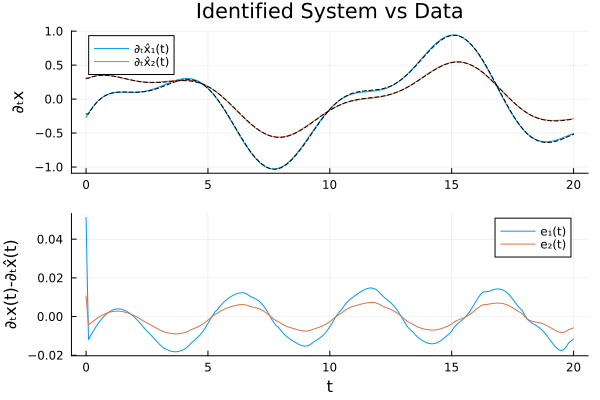

Using Real Data with Time-Varying Controls
This example demonstrates how to use DataDrivenDiffEq with real experimental data, particularly when you have time-varying control inputs stored in data files. This is a common scenario when working with physical systems like RC circuits, mechanical systems, or any controlled experiment where inputs vary over time.
The Problem Setup
Consider a linear system with controls of the form:
\[\frac{dx}{dt} = A x + B u\]
where x is the state vector, u is a time-varying control input, and A and B are constant matrices we want to identify.
In practice, both states x(t) and controls u(t) are measured at discrete time points and stored in data files (e.g., CSV).
Simulating Real Data
First, let's create some synthetic "experimental" data that mimics what you might load from a CSV file. In a real application, you would load this from your data file using packages like CSV.jl and DataFrames.jl.
using DataDrivenDiffEq
using DataDrivenDMD
using LinearAlgebra
using OrdinaryDiffEq
using PlotsDefine the true system (unknown in practice)
A_true = [-0.5 0.1; 0.0 -0.3]
B_true = [1.0; 0.5]2-element Vector{Float64}:
1.0
0.5Time-varying control: a combination of sinusoids (simulating real measured control)
function control_signal(t)
return sin(0.5 * t) + 0.3 * cos(1.2 * t)
endcontrol_signal (generic function with 1 method)System dynamics
function controlled_system!(du, u, p, t)
ctrl = control_signal(t)
return du .= A_true * u .+ B_true .* ctrl
endcontrolled_system! (generic function with 1 method)Generate "experimental" data
u0 = [1.0, -0.5]
tspan = (0.0, 20.0)
dt = 0.1 # Sampling interval
prob = ODEProblem(controlled_system!, u0, tspan)
sol = solve(prob, Tsit5(), saveat = dt)retcode: Success
Interpolation: 1st order linear
t: 201-element Vector{Float64}:
0.0
0.1
0.2
0.3
0.4
0.5
0.6
0.7
0.8
0.9
⋮
19.2
19.3
19.4
19.5
19.6
19.7
19.8
19.9
20.0
u: 201-element Vector{Vector{Float64}}:
[1.0, -0.5]
[0.978152043599682, -0.46924390523650555]
[0.9621248494823601, -0.4371499703667943]
[0.9512137222662925, -0.403976269119007]
[0.9447467087462442, -0.36997271079720984]
[0.9420876558497254, -0.3353790207432504]
[0.9426401095610994, -0.30042236975937403]
[0.9458508349679332, -0.26531536540777295]
[0.9512146554835722, -0.2302522371930109]
[0.9582751993592575, -0.19540826064309594]
⋮
[0.7026868703738623, 0.531488567058939]
[0.6408550678308137, 0.4993853640413112]
[0.5801254850510366, 0.46741945887776704]
[0.5206868982167442, 0.435703060498587]
[0.4627025670657734, 0.4043364091458474]
[0.4063102348915845, 0.37340777637341355]
[0.3515563529320376, 0.34296672404389433]
[0.2982899233579527, 0.31297586508217745]
[0.24644356641748869, 0.2834232416087197]Working with Real Data Format
In practice, your data might come from a CSV file with columns like: time, state1, state2, control1
Here we simulate that data format:
Time points (like loading from CSV column "time")
t_data = sol.t201-element Vector{Float64}:
0.0
0.1
0.2
0.3
0.4
0.5
0.6
0.7
0.8
0.9
⋮
19.2
19.3
19.4
19.5
19.6
19.7
19.8
19.9
20.0State measurements (like loading from CSV columns "state1", "state2") Note: Each column should be a time point, rows are state variables
X_data = Array(sol)2×201 Matrix{Float64}:
1.0 0.978152 0.962125 0.951214 … 0.351556 0.29829 0.246444
-0.5 -0.469244 -0.43715 -0.403976 0.342967 0.312976 0.283423Control measurements (like loading from CSV column "control1") Note: Control values at each time point, must match dimensions
U_data = [control_signal(ti) for ti in t_data]
U_data = reshape(U_data, 1, :) # Shape: (n_controls, n_timepoints)1×201 Matrix{Float64}:
0.3 0.347822 0.391235 0.430207 … -0.398507 -0.407589 -0.416767# In practice, you would load data like this:
using CSV, DataFrames
df = CSV.read("experimental_data.csv", DataFrame)
t_data = df.time
X_data = permutedims(Matrix(df[:, [:state1, :state2]])) # (n_states, n_timepoints)
U_data = permutedims(Matrix(df[:, [:control1]])) # (n_controls, n_timepoints)Creating the DataDrivenProblem
Now we can create the problem using the data arrays directly. The key insight is that U can be passed as a matrix of measured values, not just as a function!
ddprob = ContinuousDataDrivenProblem(X_data, t_data, U = U_data)
plot(ddprob, title = "Data-Driven Problem with Measured Controls")
Solving the Problem
We use DMD with SVD to identify the system dynamics:
res = solve(ddprob, DMDSVD(), digits = 2)"DataDrivenSolution{Float64}" with 2 equations and 6 parameters.
Returncode: Success
Residual sum of squares: 0.02889434192292227Examining the Results
The recovered system should approximate our original dynamics:
get_basis(res)Model ##Basis#379 with 2 equations
States : x₁ x₂
Parameters : 6
Independent variable: t
Equations
Differential(t, 1)(x₁) = p₁*x₁ + p₂*x₂ + p₃*u₁
Differential(t, 1)(x₂) = p₄*x₁ + p₅*x₂ + p₆*u₁Let's visualize how well the identified model matches the data:
plot(res, title = "Identified System vs Data")
Alternative: Using Control Functions with Interpolation
If you prefer to use a continuous function for controls (e.g., for prediction at arbitrary time points), you can interpolate your measured control data. The DataInterpolations.jl package is useful for this:
using DataInterpolations
# Create an interpolation from your measured control data
u_interp = LinearInterpolation(vec(U_data), t_data)
# Now you can use it as a control function
control_func(x, p, t) = [u_interp(t)]
ddprob_interp = ContinuousDataDrivenProblem(X_data, t_data, U = control_func)This is particularly useful when:
- Your control and state measurements are at different time points
- You want to evaluate the model at times not in your dataset
- You need smooth derivatives of the control signal
Summary
When working with real experimental data containing time-varying controls:
Load your data from CSV or other formats using CSV.jl, DataFrames.jl, etc.
Format your data correctly:
- States
X: Matrix of shape(n_states, n_timepoints) - Times
t: Vector of lengthn_timepoints - Controls
U: Matrix of shape(n_controls, n_timepoints)
- States
Create the problem using measured control values:
prob = ContinuousDataDrivenProblem(X, t, U = U)Optionally interpolate controls if you need a continuous function:
using DataInterpolations u_interp = LinearInterpolation(vec(U), t) control_func(x, p, t) = [u_interp(t)] prob = ContinuousDataDrivenProblem(X, t, U = control_func)Solve using your preferred method (DMD, sparse regression, etc.)
Copy-Pasteable Code
using DataDrivenDiffEq
using DataDrivenDMD
using LinearAlgebra
using OrdinaryDiffEq
A_true = [-0.5 0.1; 0.0 -0.3]
B_true = [1.0; 0.5]
function control_signal(t)
return sin(0.5 * t) + 0.3 * cos(1.2 * t)
end
function controlled_system!(du, u, p, t)
ctrl = control_signal(t)
return du .= A_true * u .+ B_true .* ctrl
end
u0 = [1.0, -0.5]
tspan = (0.0, 20.0)
dt = 0.1 # Sampling interval
prob = ODEProblem(controlled_system!, u0, tspan)
sol = solve(prob, Tsit5(), saveat = dt)
t_data = sol.t
X_data = Array(sol)
U_data = [control_signal(ti) for ti in t_data]
U_data = reshape(U_data, 1, :) # Shape: (n_controls, n_timepoints)
ddprob = ContinuousDataDrivenProblem(X_data, t_data, U = U_data)
res = solve(ddprob, DMDSVD(), digits = 2)
# This file was generated using Literate.jl, https://github.com/fredrikekre/Literate.jlThis page was generated using Literate.jl.